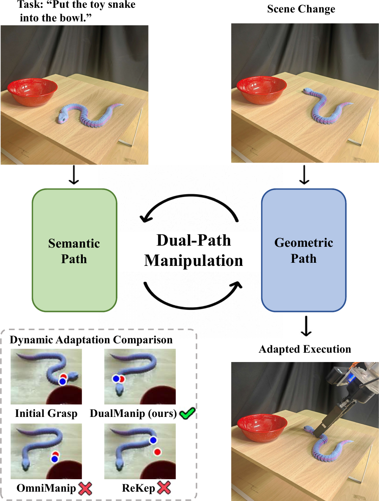
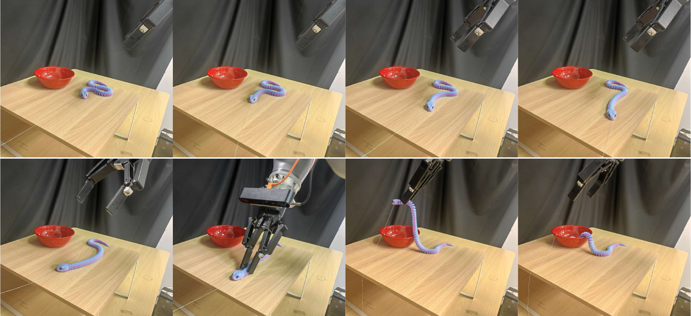
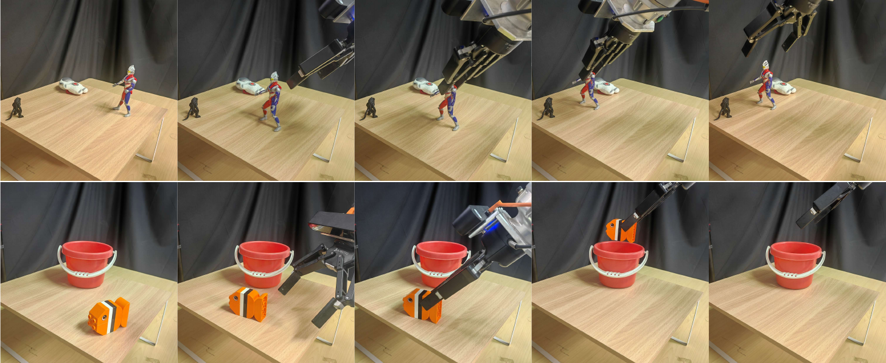

DualManip: Agentic Dynamic Manipulation via Dual-Path Semantic Reasoning and Geometric Adaptation
1 Department of Automation, Tsinghua University 2 School of Computer Science and Technology, Harbin Institute of Technology (Shenzhen) 3 Beijing Institute of Control Engineering
Abstract
Vision-language models enable open-vocabulary reasoning for robot manipulation, but their high inference latency limits responsiveness in dynamic scenes. We present DualManip, a dual-path framework that decouples infrequent semantic reasoning from responsive geometric adaptation. The semantic path interprets the task and grounds task-relevant interactions, while the geometric path updates template-to-observation correspondences from live RGB-D observations and transfers grasp contacts as objects move or deform. An Information Interaction Module connects the two paths by initializing task-relevant grasps, validating geometric updates, and triggering semantic replanning when needed. Real-world evaluation across six manipulation tasks demonstrates robust performance in static, single-change, and continuous dynamic settings.
Teaser

Experiments

